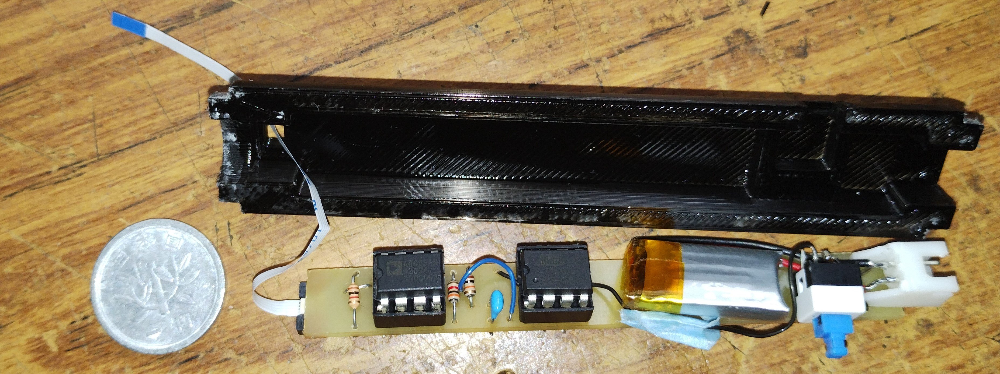
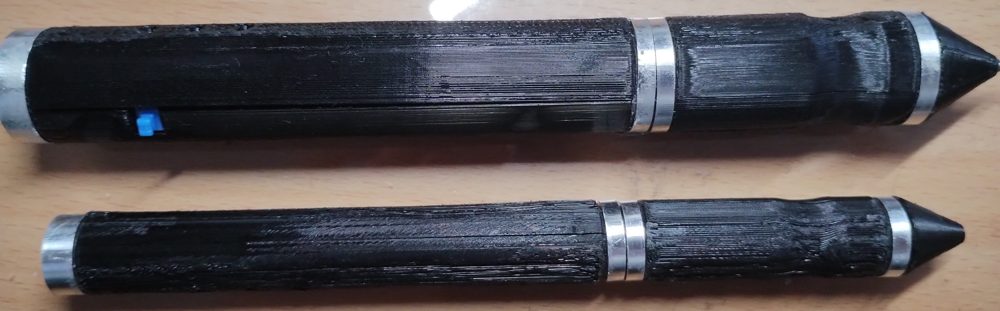
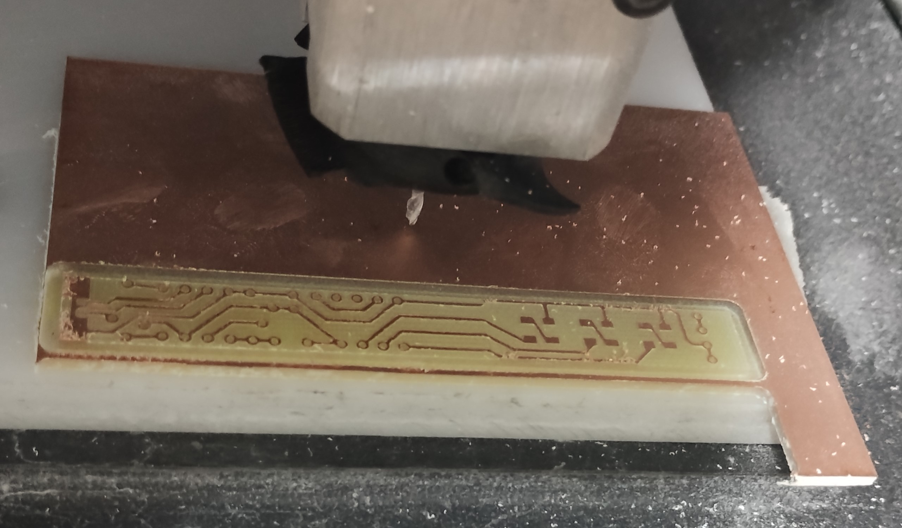
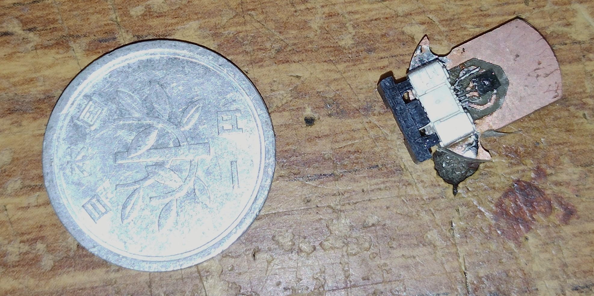

筆圧を普段のペンで知る
ペンだこや芯が折れるほどの筆圧をきっかけに、普段の筆記に近い感覚で筆圧を確認できるペン型デバイスを製作しました。機能を筆圧計測に絞り、小さくシンプルにまとめています。 この作品は、team phantomでの企画から製作まで私が担当しました。
センサーと回路をペンに収める
ペン先に10mm角の基板に実装したMEMSフォースセンサーを内蔵。ATtiny85で読み取り、筆圧に応じてLEDの表示を変え、強すぎる場合は赤色で知らせます。基板切削と表面実装を使い、マイコンや電池をペン型の筐体に収めました。
小型化と大会の結果
直径20mmの初期機から14mmの試作機も製作し、動作を確認しました。一方で小型機はコネクタ周辺の固定が弱く、短時間で壊れる課題が残りました。iCAN国内予選は3位、世界大会では入賞に至りませんでした。
制作の記録




